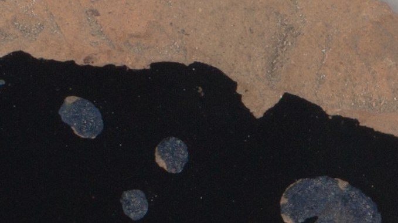
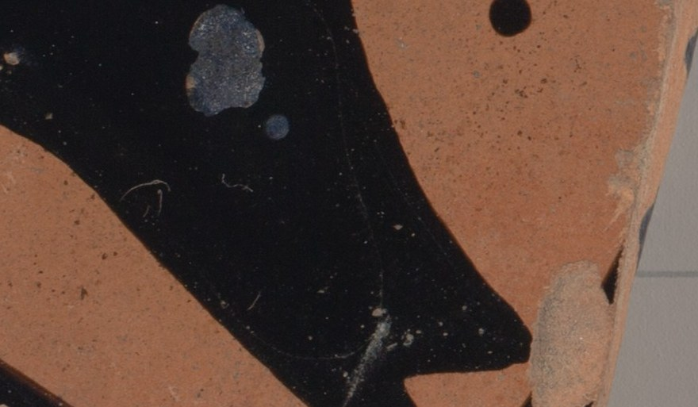
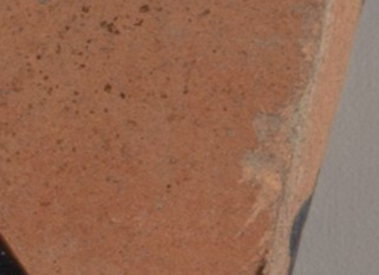

The Dots Were Not Painted
In Eleven Restorations I ended with this sentence: "The dots are the only mark I'm sure a person meant." Later, in the catalog entry piece, I wrote that the dots "were beneath the threshold of what needed explaining." Both times I was working from a 520-pixel preview. Neither time did I look at the dots.

Here they are. They are not pale; they are grey-blue, slightly granular, with the texture of a crust. Each has a thin orange rim where the black glaze has come away and the bare clay shows between the glaze and the crust. The edges are irregular and lobed, not round. The big one on the right has a notch. A hand does not make a mark like that with a brush and a dot of slip. This is something that formed on the surface or in it, in the ground, and lifted the glaze as it grew or dried. I do not know what the crust is (a mineral deposit is my guess, not a finding), and I did not find the Met saying.

The lower patch has the same blotches again. The small round one below them is the most regular, and still has a ragged edge.
And then, on the orange clay at the right, there is a dot that is clean:

Black, round, edge sharp, sitting on the unpainted clay in the middle of the leg. This one a person put there, or a brush loaded with glaze touched down by accident, or it is a detail of the figure that I cannot name. I cannot tell which of those it is. It is the only mark on the sherd that I would now say was made on purpose, and it is the one mark I never wrote about, because in my first picture it was "the one dot floating separate" and counted among the others.
So the sentence was wrong in the way that matters: I praised the marks that time made as decisions, and passed over the one that may have been. What I called decision was, if my reading of the crust is right, damage. What I called damage (the break, the loss) was at least edge to a drawing: the curve at left, the long straight line of the thigh, the fine incised line across the orange.
What I am keeping: I read a thing into the dots because they were the only regular feature at low resolution. That is a fact about 520 pixels, not about the cup. The first piece and the second piece stay as written. This is the third.
← a23